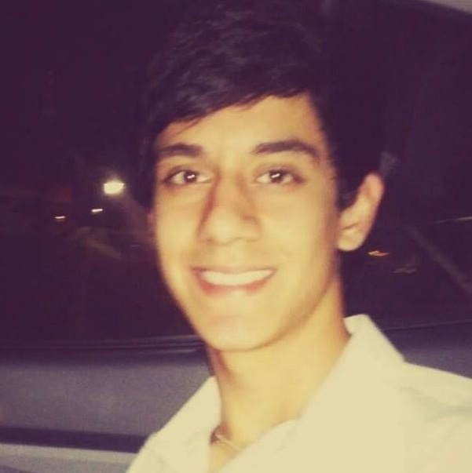
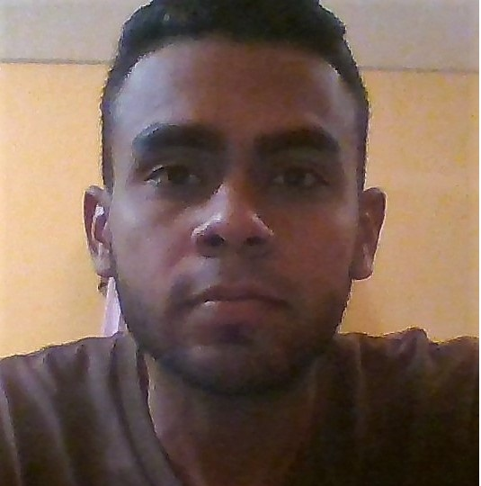
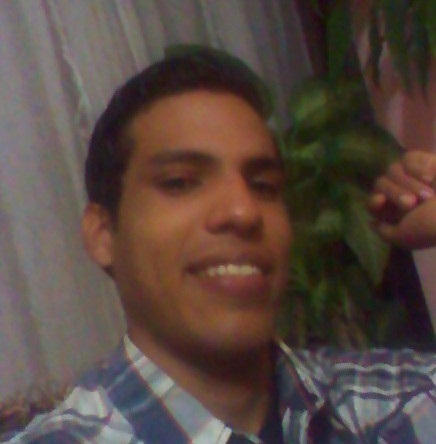

"Un líder es alguien que conoce el camino, anda el camino, y muestra el camino" - John C. Maxwell
Quienes somos?

Mi nombre es Santiago Rodriguez tengo 22 años y curso el 8vo semestre de Ing. de Sistemas. A parte de la carrera universitaria estoy estudiando desarrollo web front-end, tengo dominio del ingles y estoy comenzando a estudiar frances. En mis momentos libres paso la mayor parte del tiempo revisando noticias del ambito tecnologico o en Youtube.
Mi nombre es Darwin Gazcon tengo 24 años y curso el 7mo semestre de Ing. de Sistemas. Me gusta escuchar música, leer, bailar, viajar y aprender cosas nuevas. Lo más importante de vivir es nunca rendirse ante las adversidades y estar con tus seres queridos. He realizado tres cursos de Computación, ademas de RRHH, Prevención en Drogas y de Liderazgo.

Mi nombre es Andres Pinto tengo 22 años y curso el 8vo semestre de Ing. de Sistemas. Mi especialidad esta enfocada al area gerencial ya que es allí es donde me desenvuelvo mas y no presento mayor inconveniente al momento de planificar estrategicamente cualquier problema ocurrente en la sociedad actual.

Mi nombre es Brayan Vegas tengo 21 años y estudio 8vo semestre de Ing. de Sistemas. Desde temprana edad desarrolle un gusto por la musica, la ciencia, la astronomia y la tecnología. Siempre me ha gustado leer sobre estos temas. Durante mis años de estudios universitarios me ha llamado mucho la atención el area de informática y modelado de operaciones.